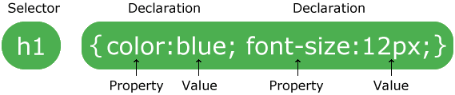

npm install -g browser-syncrem Google Chrome
browser-sync start --server --browser "chrome.exe" --files "stylesheets/*.css, *.html, scripts/*.js"
rem moz://a firefox
browser-sync start --server --browser "firefox.exe" --files "stylesheets/*.css, *.html, scripts/*.js"
browser-sync start --proxy "myproject.dev" --files "css/*.css"
There are no rules about how to structure or name your files and folders. However, projects follow some conventions used by many front-end developers.
Document Object Model (DOM) is used to access objects in web pages with eg. javascript.
<!doctype HTML>
<html>
<head>
<!---->
</head>
<body>
<!---->
</body>
<html>
Paired tags have both open(<>) and closing (< />) tag and it is mandatory to close the tag.
Self-closing tags do not wrap content, but instead refer to a resource. For instance when the browser encounters a <img> tag, it draws the image to the page. This is know as a replaced element. Because they do not wrap content or other elements, they do not have a corresponding closing tag. You will sometimes see self-closing tags written with a slash before the right angle-bracket.
All browsers come with a set of default styles, but the defaults are different from browser to browser. The browser reads the styles in order starting with the first linked style sheet. For example the browser reads the "normalize.min.css" before it reads "your-style-sheet" and so on. Finally the browser provides a default stylesheet, call the user agent (UA) stylesheet. Styles that you specify override the defaults.
<!doctype html>
<html>
<head>
<link rel="stylesheet" href="https://cdnjs.../normalize.min.css">
<link rel="stylesheet" href="stylesheets/your-style-sheet.css"
/* user agent stylesheet */
...
</head>
<body>
...When you create individual style, you do so by writing styling rules, which consist of two main parts: selectors and declarations.
The first part of a styling rule is one or more selectors. Selectors are not limited to tag names. You will rarely use element selectors in your stylesheets becuase you will not often want ot apply the exact same styles to every occurrence of a particular tag. You write selectors that apply to more targeted set of elements by increasing the selector's specificity. For example you can write selectors based on attributes. Selectors based on attributes are more specific than selectors based on element names. If a stylesheet contains multiple styles that could apply to the same element, the styles with a selector of higher specificity will be used instead of styles whose selector has a lower specificity.
Class attributes are a way to more specifically identify a group of HTML elements, usually for styling. For example, <span class="thumbnail-title">.
The following selector would match any element-selector(s) (e.g. <code> anchor) with a attribute-selector (i.e. white-space) that has a value of #. You can also use attribute selectors, with or without values, on their own.
element-selector(s) [ attribute-selector = "#" ] {
/* style declaration */
}
The text between the /* */ indicators is a CSS comment. Code comments are ignored by the browser; they allow the developer to make notes in the code for future reference.
To use a class as a selector in a styling rule, you prefix the class name with a dot (period). Class selectors are favorable over other kinds of selectors. You can write very descriptive class names that make you code easy to develop and maintain. Also, you can add multiple class names to an element. In the the HTML source <span class="class-name"> selects the following styling rule in the CSS stylesheets;
.class-name {
font-family: Helvetica, arial, sans-serif;
margin: 0 2px;
padding: 0 6px;
border-radius: 4px;
color: rgb(255, 255, 0); /* yellow */
background-color: rgb(0, 128, 0); /* green */
font-size: small;
}All HTML elements can be considered as boxes. The CSS box model is essentially a box that wraps around every block level HTML element. It consists of margins, borders, padding, and the actual content.

A combinator is something that explains the relationship between the selectors. A CSS selector can contain more than one simple selector. Between the simple selectors, we can include a combinator.
Footnote: You can group selectors, separated by a comma in a styling rule (see code sample below). Selectors of any type can be combined in this way to set common styles. Notice also that you now have two styling rules with the body element selector. When the browser sees additional styling declarations for a selector, it simply adds to its existing styling information for that selector.
@font-face {
...
}
html, body {
height: 100%
}
body {
font-family: Helvetica, arial, sans-serif;
font-size: 14px;
}
...
For a scrolling list, each item should be laid out on a single axis with a scrollbar along the axis space to accommodate content that overflows. Without this declaration, you would have to scroll the entire web page to see the additional list item elements.
.list {
white-space: nowrap; /* declaration prevent the elements from wrapping */
overflow-?: auto; /* add a scrollbar along the space. ? is x=horizontal y=vertical */
list-style: none; /* remove bullets or numbers from list items */
The <li> style definition in the CSS will have to render the block without before and after line breaks.
.list-item {
display: inline-block; /* block but without the line breaks */
You have seen display styles specifiying the properties block and inline. Block elements occupy their own horizontal line. Another way to think of this is that block elements flow from top to bottom. Block elements stack vertically. Inline elments flow from left to right. Inline elements line up horizontally.
Media queries let you group CSS declaration blocks and specify the conditions under which they should be applied. These conditions may be something like "if the viewport is at or above a minimum width", trigger your media query styling rules to reformat for a wider viewport.
<!doctype HTML>
<html>
<head>
<!--set width of layout viewport to be same as device's screen width-->
<meta name="viewport" content="width=device-width, initial-scale=1">
</head>
<body>
...
/* in the stylesheet typically at the bottom */
@media all and (min-width: 1000px) { /* we just became wide enough for a horizontal layout... */
.main-content-container {
flex-direction: row;
}
.thumbnail-list { /* move the list to the left... */
overflow-y: auto; /* and change scrolling to up and down. */
}
...
Flexbox model
display: block; - to strip the leading and trailing <br> from the element.
some code
more code...
...some code more text ...".
html The CSS border-image property allows you to specify an image to be used instead of the normal border around an element. The border-image property takes the image and slices it into nine sections, like a tic-tac-toe board. It then places the corners at the corners, and the middle sections are repeated or stretched as you specify. The property has three parts:
NetBeans: To Run Your Page: If your page needs the HTTP protocol (for example making AJAX calls), you need to have Apache serve up your web page. To do this,
NetBeans: To test Web APIs: Later in this course, you will be writing Server Side code that responds to JavaScript requests from your web pages. We will use JSP pages for this. Test that your installation can run JSP pages, so that if there is a problem you have more time to fix it.
Hue is the dominant wavelength of red, green, blue. All electronic visual displays use this triad to produce color.
Saturate/Desaturate: hue becomes more/less dominant, move to circle’s edge/center
Value is the quantity of light reflection; high values of reflection are lighter/white, low reflection values are darker/black
{kind=link}